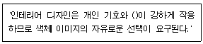
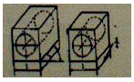
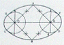
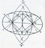
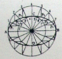
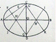
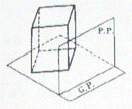
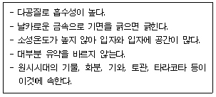
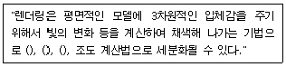

컴퓨터그래픽스운용기능사 (2007-09-16 기출문제)
1과목: 산업디자인 일반
1. 디자인 요소 중 물체의 표면에 가지고 있는 특징의 차이를 시각과 촉각을 통하여 느낄 수 있는 것은?
- 형
- 색체
- 재질감
- 빛과 운동
(정답률: 88%)

2. 다음 중 브레인스토밍법을 가장 잘 설명한 것은?
- 회의 중에는 절대 비평하지 않는 개인 위주의 토의법
- 집단사고에 의한 자유분방한 아이디어를 창출하는 방법
- 모든 아이디어를 간결하고 명백하게 하는 방법
- 다른 사람의 아이디어를 결합하여 개선하도록 노력하는 방법
(정답률: 79%)
3. 다음 중 마케팅 활동의 주요 요소와 거리가 먼 것은?
- 시장조사
- 제품 생산 계획
- 디자인 연구소 설립
- 광고 및 판매 촉진
(정답률: 86%)
4. 무성한 나뭇잎들 사이에서 핀 꽃, 별이 총총한 밤하늘에 뜬 달, 고층 건물 사이에 자리한 옛 건축물 등의 예와 관련된 디자인 원리는?
- 반복
- 율동
- 점증
- 강조
(정답률: 85%)
5. 아이디어 스케치와 가장 거리가 먼 것은?
- 자유로운 이미지 표현
- 신속한 아이디어 전개
- 이미지를 포착하기 위한 방법
- 정확도와 정밀성이 높은 그림
(정답률: 89%)
6. 다음 중 멀티광고에 대한 설명으로 틀린 것은?
- 멀티프로덕트 광고는 여러 가지 제품을 따로 분류해 제시한다.
- 멀티풀 페이지 광고는 다면 광고라고도 한다.
- 멀티광고는 멀티프러덕트 광고와 멀티풀 페이지 광고로 나뉜다.
- 멀티풀 페이지 광고는 광고의 수신자에 대해 자극력이 매우 강하게 된다.
(정답률: 48%)
7. 다음 중 '묘사'에 관한 설명과 거리가 먼 것은?
- 반복함으로서 조형의 질서와 법칙을 파악 할 수 있다.
- 초보 단계에서는 기초적인 도구를 이용한 사실적 표현이 바람직하다.
- 복잡한 조형요소들을 일관된 체계나 구조 속에서 간략화하여 변형한다.
- 감각을 깊게 하고 조형력을 기르기 위한 수단으로 묘사가 필요하다.
(정답률: 62%)
8. 다음 중 시각 디자인의 분야가 아닌 것은?
- 광고 디자인
- 디스플레이 디자인
- 포장 디자인
- P.O.P 디자인
(정답률: 62%)
9. 동적이고 불안정한 느낌을 주지만 사용에 따라 강한 느낌을 나타낼 수 있는 선은?
- 곡선
- 수평선
- 포물선
- 사선
(정답률: 85%)
10. 다음 중 잡지광고의 특징과 가장 거리가 먼 것은?
- 매체로서의 생명이 매우 짧다.
- 독자 간의 회람율이 높다.
- 전국적으로 배포되므로 경제적이다.
- 잡지 특성에 따라 특정한 독자층을 확보한다.
(정답률: 75%)
11. 마케팅의 기본 원리와 가장 거리가 먼 것은?
- 소비자의 욕구를 파악한다.
- 회사의 세무관계를 조사한다.
- 좋은 디자인은 훌륭한 판매자의 역할을 한다.
- 소비자 행동을 파악한다.
(정답률: 90%)
12. Bauhouse에 대한 설명 중 옳은 것은?
- 독일 뭔휀에 세운 디자인 대학
- 모던한 형태의 디자인 원형 제작으로 성공적인 판매 활동을 시작한회사
- 헤르만 무테지우스가 세운 독일공작연맹
- 형태디자인과 기능디자인의 결합을 추구한 새로운 형태의 종합 조형교육기관
(정답률: 76%)
13. 굿 디자인(Good Design)이 갖추어야 할 4가지 조건은?
- 합목적성, 경제성,심미성, 독창성
- 기능서, 유행성, 지역성, 경제성
- 경제성, 심미성, 모방성, 유행성
- 합목적성, 심미성, 유행성, 모방성
(정답률: 94%)
14. '마케팅 믹스'라고 하는 마케팅의 구성 요소인 '4p"에 해당되지 않는 것은?
- 제품
- 가격
- 기업
- 유통
(정답률: 81%)
15. 다음 중 패키지의 기능이 아닌 것은?
- 보호와 보존성
- 편리성
- 상품성
- 시기성
(정답률: 78%)
16. 클립아트(Clip Art)에 대한 설명으로 가장 적합한 것은?
- 페이지로 인쇄한 뒤에 접착제로 덧붙여 첨부된 일러스트레이션이다.
- 컴퓨터로 문서를 만 들 때 편리하게 이용할 수 있도록 모아 놓은 여러 가지 조각 그림이다.
- 텍스트와 이미지가 인쇄용 최종 도판에서 레이아웃 되면서 붙여지는 제작과정이다.
- 도판이 요구하는 크기나 내용에 따라 그림의 불필요한 가장자리 부분을 잘라내는 것이다.
(정답률: 81%)
17. 몸에 지니는 작은 악세사리에서 부터 입고, 화장하고, 가꾸는 일체의 행위 자체를 의도된 디자인으로 계획하는 것은?
- 의상 디자인
- 장식 디자인
- 토탈페션 디자인
- 제품 디자인
(정답률: 82%)
18. 다음( )안에 들어갈 가장 적합한 말은?

- 심미성
- 경제성
- 시간성
- 성별성
(정답률: 94%)
19. 예술은 대중을 위해서 뿐만 아니라, 대중에 의해서, 대중의 예술이 되어야 한다고 주장하고 예술의 사회화와 민주화를 위해 미술공예운동을 실천한 사람은?
- 존 러스킨
- 윌리엄 모리스
- 오웬 존스
- 헨리 드레이퍼스
(정답률: 89%)
20. 시각적 착시현상을 확대, 응용한 미술운동은?
- 아르누보
- 팝 아트
- 옵아트
- 유켄트스틸
(정답률: 73%)
2과목: 색채 및 도법
21. 1점 쇄선의 용도에 대한 설명 중 맞는 것은?
- 도형의 중심을 표시하는 선
- 기호를 기입하기 위한 선
- 보이는 부분의 외곽선을 나타내는 선
- 보이지 않는 부분의 외곽선을 나타내는 선
(정답률: 59%)
22. 다음 중 생동, 열정, 활력으로 상징되는 정열적인 배색은?
- 검정과 회색
- 녹색과 주황
- 빨강과 주황
- 노랑과 보라
(정답률: 94%)
23. 다음 그림과 같은 투상도의 명칭은?

- 등각 투상도
- 사 투상도
- 부등각 투상도
- 1소점 투시도
(정답률: 62%)
24. 해칭 방법 중 틀린 것은?
- 중심선 또는 주요 외형선에 대하여 45˚의 경사로서 등간격으로 긋는다.
- 해칭을 간편하게 할 때는 외형선으로 표시해도 된다.
- 2개 이상의 부품이 인접해 있을 때에는 해칭 방향 또는 간격을 다르게 한다.
- 떨어진 위치에 나타난 동일 부품의 단면에는 동일한 각도와 간격의 해칭을 한다.
(정답률: 62%)
25. 정투상법에 대한 설명 중 틀린 것은?
- 투상각은 공간을 수직, 수평으로 4등분하여 1. 2. 3. 4. 각으로 구분한다.
- 제 1각법은 영국을 기준으로 보급되어사용되어 왔다.
- 제 3각법은 미국을 중심으로 보급되어 사용되어 왔다.
- KS 규격은 기계제도 중에 제 1각법을 원칙적으로 사용되도록 규정하고 있다.
(정답률: 80%)
26. 다음 중 명시도가 가장 높은 것은?
- 흰색 바탕에 빨강 글씨
- 파랑 바탕에 흰색 글씨
- 빨강 바탕에 흰색 글씨
- 노랑 바탕에 검정 글씨
(정답률: 79%)
27. 다음 색에 대한 설명 중 옳은 것은?
- 진한색, 연한색, 흐린색 등의 표현은 명도의 고저를 가리키는 것이다.
- 색입체에서 명도는 수치가 높을수록 저명도이다.
- 무채색은 색의 3속성을 모두 지닌다.
- 먼셀의 색표기는 HV/C로 한다.
(정답률: 79%)
28. 다음 중 중성색끼리 짝지어진 것은?
- 빨강, 노랑
- 녹색, 청록
- 연두, 자주
- 주황, 파랑
(정답률: 75%)
29. 푸르킨예 현상에 대한 설명 중 잘못된 것은?
- 낮에는 추상체로부터 밤에는 간상체로 이동하는 현상이다.
- 파장이 짧은 색이 먼저 사라지고, 파장이 긴 색이 나중에 사라진다.
- 이 현상을 이용한 것이 비상구 표시, 계단 비상등 등이다.
- 빨간 사과가 밤이 되면 검게 보인다.
(정답률: 70%)
30. 빨강순색의 색상 기호는 "5R 4/14"이다. 이 때 "5R"이 나타내는 것은?
- 명도
- 색상
- 채도
- 색명
(정답률: 83%)
31. 투시도에 관한 설명 중 맞는 것은?
- 시점과 대상물을 연결한 투시선에 의해 대상물의 상이 그려지는 것이다.
- 제 3각법에 의해 알아보기 쉽게 나타낸 것이다.
- 물체를 작교하는 두 투상면에 투상시키는 것이다.
- 도형의 모양을 전개하여 펼쳐그린 것이다.
(정답률: 66%)
32. 타원을 그리는 방법 중 두 원을 연접 시킨 타원은?




(정답률: 79%)
33. 다음 중 색채의 무게감과 가장 관계가 있는 것은?
- 색상
- 명도
- 채도
- 순도
(정답률: 83%)
34. 가시광선 중 파장 범위가 가장 긴 색은?
- 빨강
- 노랑
- 파랑
- 보라
(정답률: 80%)
35. 먼셀 표색계에서 색의 밝고 어두운 정도를 나타내는 기본적인 명도 단계는?
- 1~5
- 1~12
- 0~10
- 0~14
(정답률: 80%)
36. 교통표지판의 색상을 결정할 때에 가장 고려하여야 할 사항은?
- 심미성
- 경제성
- 양질성
- 명시성
(정답률: 90%)
37. 색명에 대한 설명 중 잘못된 것은?
- 일반 색명은 습관적으로 사용하는 하나하나의 고유색명이다.
- 색채를 정확하고 쉽게 구별하도록 표시하는 것이다.
- 식물과 관련 있는 고유색명은 귤색, 녹두색, 가지색 등이다.
- 관용색명은 막연하고 모호한 표현으로 그칠 수 있어 정확한 전달이 어렵다.
(정답률: 51%)
38. 다음 색각(色覺)에 대한 설명 중 잘못된 것은?
- 영. 헬름홀츠의 3원색 설은 망막에 적 .녹. 청의 시신경 섬유가 있다는 이론이다.
- 헤링의 4원색 설은 청-자, 황-녹, 적-청의 반대되는 수용체가 있다는 이론이다.
- 영 헬름홀츠의 3원색 설은 색광혼합인 가산혼합과 일치된다.
- 색각 이상으로 인해 색을 구별할 수 없는 색맹이 된다.
(정답률: 59%)
39. 다음 중 우아한 배색으로 가장 적합한 것은?
- 빨강
- 노랑
- 보라
- 파랑
(정답률: 85%)
40. 다음 그림과 같은 투시법은?

- 평행 투시도
- 유각 투시도
- 경사투상도
- 입체 투시도
(정답률: 66%)
3과목: 디자인 재료
41. 불투명도가 높고, 지질이 균일하여 성서나 사전의 본문 인쇄에 많이 사용되고 있는 종이는?
- 로루지(Machine glazed paper)
- 크라프트지 (Craft Paper)
- 인디아지(India Paper)
- 아트지(Art Paper)
(정답률: 77%)
42. 다음이 설명하는 재료는?

- 도기
- 토기
- 자기
- 석기
(정답률: 80%)
43. 금속 표면에 다른 금속 또는 합금의 얇은 층을 입혀 피막을 처리하는 방법은?
- 라이닝
- 도금
- 도장
- 연마
(정답률: 80%)
44. 파티클 보드(Particle Board)란?
- 항공기 프로펠러의 재로로 0.5~3mm 두께의 너도밤나무 등을 건조시켜 단판에 페놀 수지를 침윤시켜 열압한 합판이다.
- 내장용 합판으로 요소 수지, 단백질계 접착제로 접착한 합판을 말한다.
- 목재를 얇고 잘게 조각을 내어 결합제를 가하여 성형 열압한 판상 제품이다.
- 페놀 수지 축합물을 목재에 흡수시켜 수분을 증발하고 셀룰로오스와 리그닌의 수산기를 결합시킨 합판을 말한다.
(정답률: 64%)
45. 다음 중 학명이 플라티늄인 회백색의 귀금속은?
- 금
- 백금
- 은
- 오금
(정답률: 78%)
46. 강조에 따른 필름의 종류 중 세밀한 부분까지도 정교하게 나타내거나 미세한 입자로 네거티브를 크게 확대하고자 할 때 유용한 필름은?
- 고감도 필름
- 중감도 필름
- 저감도 필름
- 초고감도 필름
(정답률: 64%)
47. 가열하여 유동상태로 된 플라스틱을 닫힌 상태의 금형에 고압으로 충전하여 이것을 냉각 경화시킨 다음 금형을 열어 성형품을 얻는 방식은?
- 압축성형
- 사출성형
- 압출설형
- 블로우 성형
(정답률: 67%)
48. 지면의 표면가공은 표면에 광택을 주어 미적효과를 내기 위한 인쇄면의 잉크를 보호하는 실용적인 면으로 볼 수 있다. 종이 표면 가공법의 종류가 아닌 것은?
- 오버 프린트(Over Print)
- 프레스 코트(Press Coat)
- 색체 조절(Color Conditioning)
- 왁스 칠(Wax Coat)
(정답률: 63%)
4과목: 컴퓨터 그래픽스
49. 인쇄물의 이미지를 스캔 받았더니 도트 망점으로 인해 이미지가 선명하지 않아 이를 선명하게 작업하려고 한다. 효과적인 방법은?
- 블러(Blur)
- 샤픈(Sharpen)
- 렌더(Render)
- 디스톨트(Distort)
(정답률: 69%)
50. 다음 중 비트맵(Bit map) 파일 포멧(Fornmat)이 아닌 것은?
- GIF
- JPEG
- AI
- TIFF
(정답률: 78%)
51. 컴퓨터로 제작된 동영상을 VHS 비디오로 출력할 때 국내(한국)에서 일반적으로 사용하는 비디오 출력방식은?
- Full Screen
- PAL 방식
- LCD 방식
- NTSC방식
(정답률: 68%)
52. ROM에 대한 설명으로 틀린 것은?
- 한번 기록된 데이터를 단지 읽기만 할 뿐 변경할 수 없는 메모리이다.
- Read Only Memory의 약자이다.
- 컴퓨터 내부에서 신호를 주고받기 위한 통로를 말한다.
- 전원이 공급이 없어도 항시 기억이 되고 있어 비휘발성 기억 소자라고 칭한다.
(정답률: 69%)
53. 다음설명의 ( )안에 들어갈 용어로 적합하지 않은 것은?

- 스캔라인(scan line)법
- 몰핑(morphing) 기법
- 제트버퍼(z-buffer) 법
- 광선추적(ray tracing)법
(정답률: 60%)
54. 다음 중 CAD가 많이 사용되지 않는 분야는?
- 자동차
- 전자회로
- 건축
- 상업광고
(정답률: 82%)
55. 컴퓨터 애니메이션 작업에서 작업을 하는 사람과 사람사이의 의사소통 수단이며, 일정한 형식은 없지만 연속되는 장면을 위주로 음악, 음향, 카메라, 물체, 빛 등의 움직임, 편집과정(또는 작업순서 등)을 자세하게 적어 놓은 것은?
- 스토리보드
- 아이디어스케치
- 렌더링
- 벡터그래픽스
(정답률: 87%)
56. 디지털 화상을 아날로그 화상으로 전환 출력할 수 있는 시스템은?
- 모니터
- 필름레코터
- 하드디스크
- 스캐너
(정답률: 65%)
57. Auto CAD에서 도면이 그려지는 영역을 결정하는 명령으로, 그 범위는 좌측 하단과 우측 상단의 절대좌표를 입력, 지정하는 명령어는?
- Units
- Snap
- Limits
- Line
(정답률: 67%)
58. 검정색과 흰색의 이미지로 구성되어 있으며 선택영역을 저장하고 편집하여 보다 지속적인 마스크를 생성할 수 있는 역할을 하는 것은?
- 레이어(Layer)
- 알파채널(Alpha Channel)
- Z 버퍼(Z buffer)
- 히스토그램(Histogram)
(정답률: 65%)
59. 잡지광고를 제작하기 위해 QuarkEXprss 프로그램을 활용하고자 한다. 사진 이미지를 삽입을 위해 스캐너로 이용하여 사진 이미지를 입력 받아 포토샵에서 수정 후 저장하고자 할 때, 다음 중 이미지 파일 포맷으로 가장 적합한 것은?
- EPS
- GIF
- TGA
- PSD
(정답률: 47%)
60. GUI(Graphical User Interface) 디자인에 있어서 고려해야 할 원칙이 아닌 것은?
- 예측성
- 일관성
- 명료성
- 은밀성
(정답률: 83%)